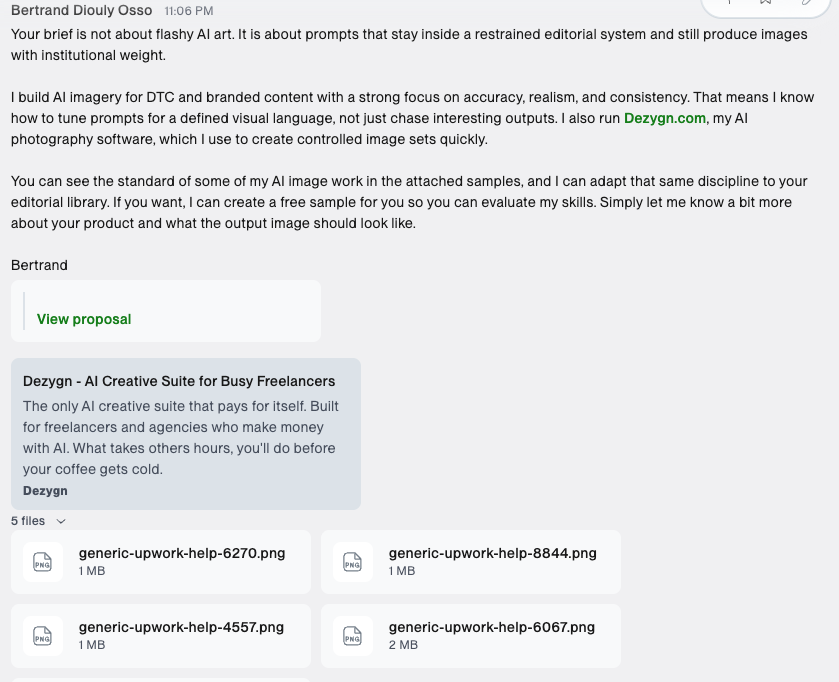
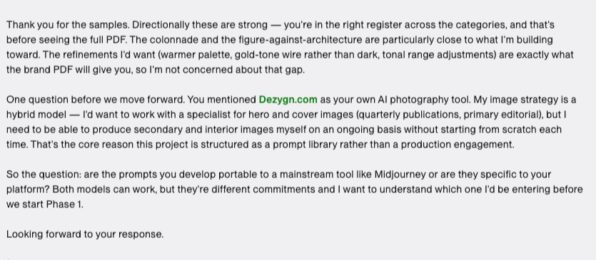

<template id="b01-open-template">
  <div data-composition-id="b01-open" data-width="1920" data-height="1080">
    <!-- ============================================================
         BEAT 1 — OPEN · DARK scene · proof screenshots + "FORTY… I WON."
         VO 19.75s · scene 20.4s
         This file is the TEMPLATE all other beats follow:
           - non-timed .beat-fade wrapper (crossfade in, never out)
           - .bg scene background (ink dark)
           - decorative layer: drifting serif glyph + breathing purple glow
             + faint ghost "dezygn" wordmark  (ONE shared ambient motion family)
           - content layer in .scene-content (flex, padding, no absolute)
           - <audio> VO clip on its own track sharing data-start/duration
         ============================================================ -->
    <div class="beat-fade">
      <div class="bg"></div>

      <!-- decoratives -->
      <div class="glow" data-layout-ignore></div>
      <div class="glyph" data-layout-ignore>✳</div>
      <div class="ghost" data-layout-ignore>dezygn</div>

      <div class="scene-content">
        <div id="b01-eyebrow" class="clip eyebrow" data-start="0.2" data-duration="20.2" data-track-index="2">
          UPWORK · THE JOB I WON
        </div>

        <div class="shots">
          <div id="b01-msg" class="clip shot-card" data-start="0.3" data-duration="20.1" data-track-index="3">
            
            <div id="b01-badge" class="clip badge" data-start="2.0" data-duration="18.4" data-track-index="4">40+ applicants</div>
          </div>
          <div id="b01-reply" class="clip shot-card reply" data-start="0.9" data-duration="19.5" data-track-index="5">
            
          </div>
        </div>

        <div class="kicker">
          <div id="b01-k1" class="clip line">
            <span class="big">FORTY</span> applied.
          </div>
          <div id="b01-k2" class="clip line">
            One <span class="serif">won</span> it.
          </div>
        </div>
      </div>

      <!-- VO -->
      <audio id="b01-vo" class="clip" src="../assets/b01.wav" data-start="0.3" data-duration="19.8" data-track-index="9"></audio>
    </div>

    <style>
      @font-face {
        font-family: "Instrument Serif";
        font-style: italic;
        font-weight: 400;
        font-display: block;
        src: url("../assets/fonts/instrument-serif-italic.woff2") format("woff2");
      }
      @font-face {
        font-family: "Instrument Serif";
        font-style: normal;
        font-weight: 400;
        font-display: block;
        src: url("../assets/fonts/instrument-serif-regular.woff2") format("woff2");
      }
      [data-composition-id="b01-open"] {
        --vellum: #f7f5f0;
        --paper: #edebe6;
        --ink: #1a1a1a;
        --inkWarm: #2b2b2b;
        --muted: #6b6459;
        --dim: #8b867b;
        --accent: #8b5cf6;
        --accentDeep: #7c3aed;
        --paperOnDark: #e8e4db;
        position: absolute;
        inset: 0;
        overflow: hidden;
      }
      [data-composition-id="b01-open"] .beat-fade { position: absolute; inset: 0; }
      [data-composition-id="b01-open"] .bg {
        position: absolute; inset: 0; z-index: 0;
        background: #161616;
      }
      /* breathing purple radial glow */
      [data-composition-id="b01-open"] .glow {
        position: absolute; z-index: 1;
        width: 1300px; height: 1300px;
        left: 50%; top: 46%; transform: translate(-50%, -50%);
        background: radial-gradient(circle, rgba(139,92,246,0.22) 0%, rgba(139,92,246,0.08) 38%, rgba(139,92,246,0) 68%);
        pointer-events: none;
      }
      [data-composition-id="b01-open"] .glyph {
        position: absolute; z-index: 1;
        right: 60px; top: 40px;
        font-family: "Instrument Serif", serif;
        font-size: 360px; line-height: 1;
        color: rgba(139,92,246,0.10);
        pointer-events: none;
      }
      [data-composition-id="b01-open"] .ghost {
        position: absolute; z-index: 1;
        left: -20px; bottom: 30px;
        font-family: "Inter", sans-serif; font-weight: 900;
        font-size: 300px; letter-spacing: -0.04em;
        color: rgba(232,228,219,0.035);
        pointer-events: none;
      }

      [data-composition-id="b01-open"] .scene-content {
        position: absolute; inset: 0; z-index: 5;
        display: flex; flex-direction: column;
        align-items: center; justify-content: center;
        gap: 34px;
        width: 100%; height: 100%;
        padding: 70px 120px;
        box-sizing: border-box;
      }
      [data-composition-id="b01-open"] .eyebrow {
        font-family: "IBM Plex Mono", monospace; font-weight: 600;
        text-transform: uppercase; letter-spacing: 0.18em;
        font-size: 22px; color: var(--accent);
      }
      [data-composition-id="b01-open"] .shots {
        display: flex; align-items: flex-start; justify-content: center;
        gap: 36px;
      }
      [data-composition-id="b01-open"] .shot-card {
        position: relative;
        background: #ffffff; border-radius: 20px;
        padding: 14px;
        box-shadow: 0 30px 70px rgba(0,0,0,0.55), 0 2px 0 rgba(255,255,255,0.06) inset;
      }
      [data-composition-id="b01-open"] .shot-card img {
        display: block; border-radius: 10px;
      }
      [data-composition-id="b01-open"] .shot-card:not(.reply) img { width: 540px; height: auto; }
      [data-composition-id="b01-open"] .shot-card.reply { margin-top: 70px; }
      [data-composition-id="b01-open"] .shot-card.reply img { width: 560px; height: auto; }
      [data-composition-id="b01-open"] .badge {
        position: absolute; top: -22px; left: 50%; transform: translateX(-50%);
        background: var(--accent); color: #fff;
        font-family: "IBM Plex Mono", monospace; font-weight: 600;
        text-transform: uppercase; letter-spacing: 0.10em; font-size: 22px;
        padding: 10px 22px; border-radius: 9999px;
        box-shadow: 0 12px 30px rgba(139,92,246,0.5);
        white-space: nowrap;
      }
      [data-composition-id="b01-open"] .kicker {
        display: flex; align-items: baseline; justify-content: center; gap: 26px;
      }
      [data-composition-id="b01-open"] .line {
        font-family: "Inter", sans-serif; font-weight: 800;
        font-size: 72px; letter-spacing: -0.02em; color: var(--paperOnDark);
      }
      [data-composition-id="b01-open"] .line .big {
        font-weight: 900; font-size: 88px; color: #fff;
      }
      [data-composition-id="b01-open"] .line .serif {
        font-family: "Instrument Serif", serif; font-style: italic; font-weight: 400;
        font-size: 90px; color: var(--accent);
      }
    </style>

    <script src="https://cdn.jsdelivr.net/npm/gsap@3.14.2/dist/gsap.min.js"></script>
    <script>
      window.__timelines = window.__timelines || {};
      const tl = gsap.timeline({ paused: true });
      const D = 20.4;

      // crossfade IN (the whole beat), never out
      tl.fromTo(".beat-fade", { opacity: 0 }, { opacity: 1, duration: 0.5, ease: "power2.out" }, 0);

      // ambient (shared family: slow drift + breathe) — finite repeats
      tl.to(".glyph", { rotation: 8, y: 26, duration: D, ease: "sine.inOut" }, 0);
      tl.to(".glow",  { scale: 1.06, duration: D / 2, ease: "sine.inOut", yoyo: true, repeat: 1 }, 0);
      tl.to(".ghost", { x: 40, duration: D, ease: "sine.inOut" }, 0);

      // entrances (varied eases)
      tl.fromTo("#b01-eyebrow", { y: -28, opacity: 0 }, { y: 0, opacity: 1, duration: 0.5, ease: "power3.out" }, 0.25);
      tl.fromTo("#b01-msg",   { y: 60, opacity: 0, scale: 0.96 }, { y: 0, opacity: 1, scale: 1, duration: 0.7, ease: "power3.out" }, 0.35);
      tl.fromTo("#b01-reply", { y: 80, opacity: 0, scale: 0.96 }, { y: 0, opacity: 1, scale: 1, duration: 0.7, ease: "expo.out" }, 0.6);
      tl.fromTo("#b01-badge", { scale: 0, opacity: 0 }, { scale: 1, opacity: 1, duration: 0.55, ease: "back.out(2)" }, 2.0);
      tl.fromTo("#b01-k1", { y: 40, opacity: 0 }, { y: 0, opacity: 1, duration: 0.55, ease: "power2.out" }, 1.0);
      tl.fromTo("#b01-k2", { y: 40, opacity: 0 }, { y: 0, opacity: 1, duration: 0.55, ease: "power4.out" }, 1.3);
      // emphasis pop on the won-it serif as the VO lands "and I won it" (~6.5s)
      tl.to("#b01-k2 .serif", { scale: 1.12, duration: 0.3, ease: "power2.out", yoyo: true, repeat: 1 }, 6.4);

      window.__timelines["b01-open"] = tl;
    </script>
  </div>
</template>
